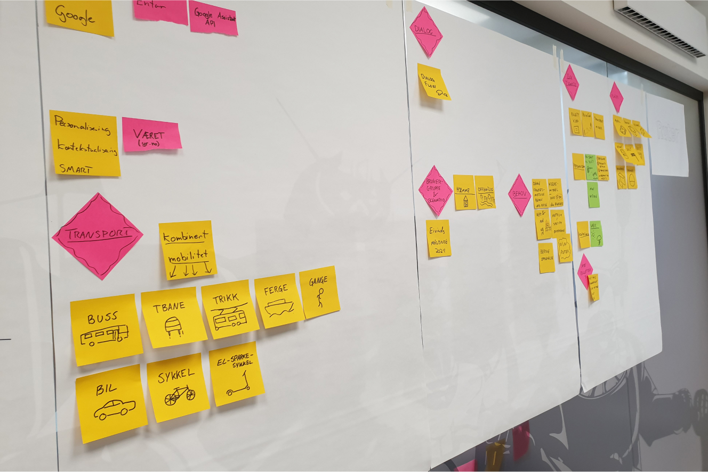
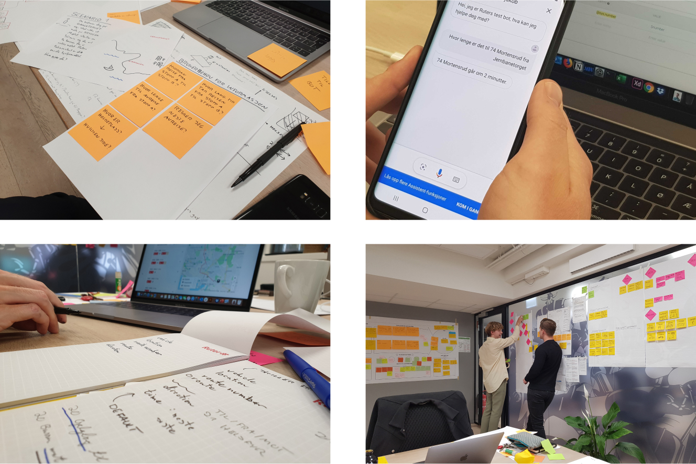
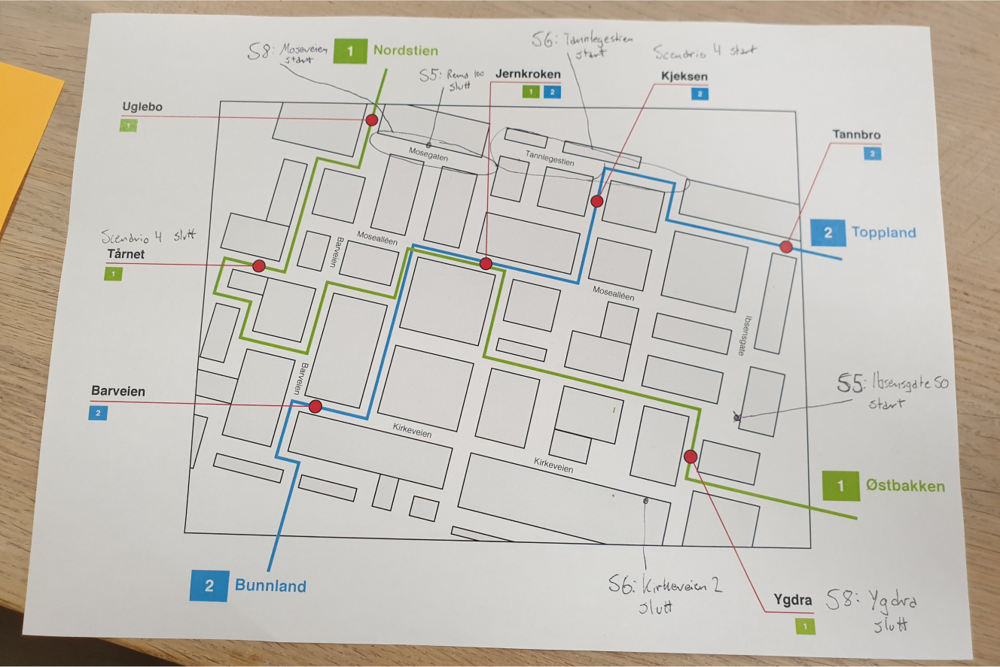
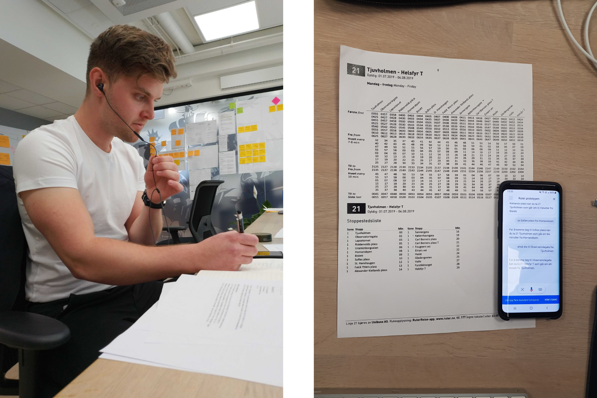
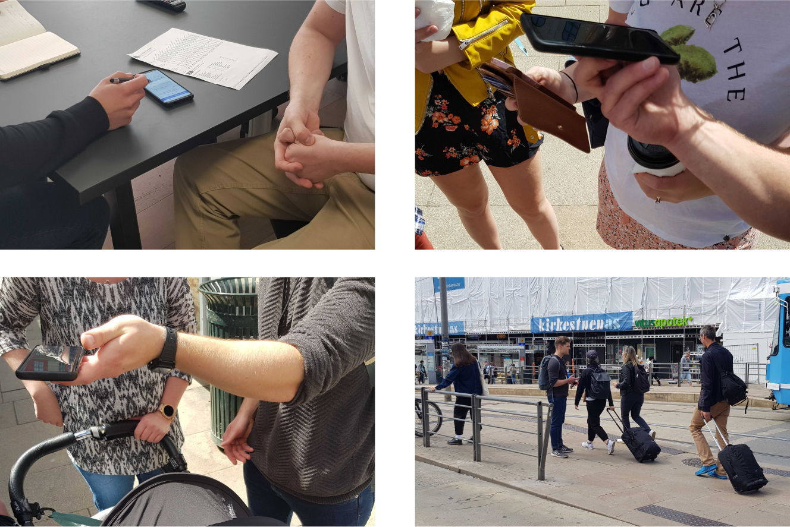

Jakob Køhn
Ruter voice assistant

Testing the final prototype.
Ruter voice assistant
Ruter (Making Waves)· 2019 · Interaction Design
Ruter wanted to explore how a voice assistant could offer travel information as departure times and travel suggestions with public transport in Oslo and Akershus. The project consisted of documenting insight that could be used in eventual further development, develop a functioning voice assistant based on Google Assistant, and describe relevant scenarios for future service areas.
The project begun by gathering insight, looking at how travel information is offered by both Ruter and Google, and defining which functions were important in the voice assistant. We conducted several user test in order to develop and facilitate for good conversation between the user and the voice assistant the represented Ruter. The solution utilized the existing Google Assistant platform connected to an API from Ruter that served the voice assistant with travel information.
My role: Designer
I worked in a team consisting in total of two designers and two developers. I worked on gathering insight together with the other team members, securing the understanding of the users, conducting interviews, and designing the conversation and personification of Ruter as a digital voice assistant.
I focused on involving users early through interviews and test. As we didn’t have a working prototype initially, we conducted Wizard of Oz tests where one of us played the role as the voice assistant over voice chat. We used a fictional city map in order to simulate situations where the user didn’t know the city in advance. This gave us valuable insight and direction that we used in the parallel development of the working prototype.
I worked on making sure that the personification of Ruter as a voice assistant fitted their already existing design system. I adapted the voice assistant’s language to appear reliable and jovial, while at the same time following Ruter’s guidelines for messages in text form.
My experience with programming also made me able to function as a bridge between the designers and the developers, where we also included the developers in the design process in order to create an appropriate solution together. Even though designing a voice assistant was new for all of us, we still have a lot of experience with conversations and dialogs. This gave us all an important voice in the holistic understanding and work of the project.
Technologies and tools:
Interaction Design, Conversation Design, Universal Design, user testing, interviews, insight work, Google Dialogflow and Adobe Illustrator.
Images:
Getting an overview of the different parts of the task.
Testing and writing down possible conversation flows.
A fictional map used in user testing in order to simulate a situation where the user have no prior knowledge of the city.
Wizard of Oz testing where one of us sat with the user, while another played the role of the voice assistant over voice chat.
User testing with people on the move.
jakobk@jakobk.no